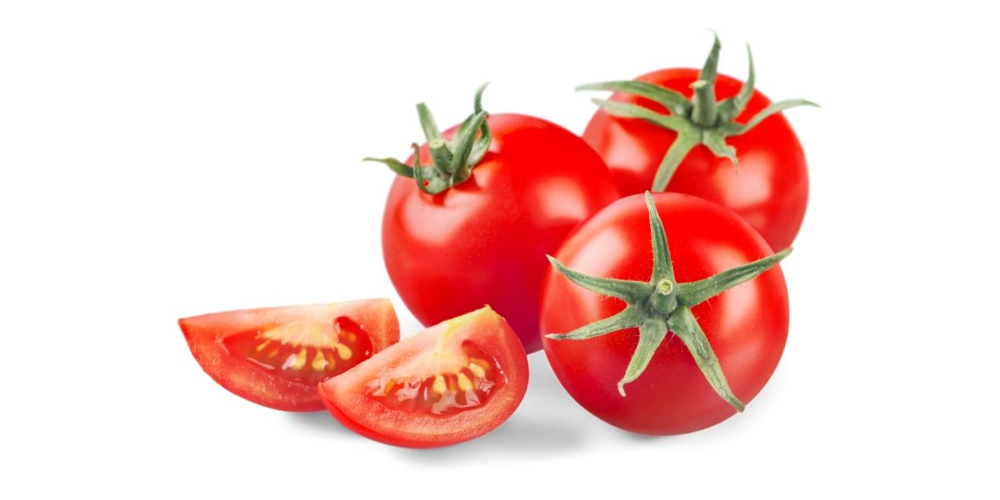

Website ini memberikan informasi penting mengenai pH, EC (Electrical Conductivity), kelembapan, dan suhu ideal untuk berbagai tanaman seperti tomat, seledri, lettuce, dan kubis.
Tanaman yang Tersedia

Tomat
Informasi pH, EC, kelembapan, dan suhu ideal untuk budidaya tomat.